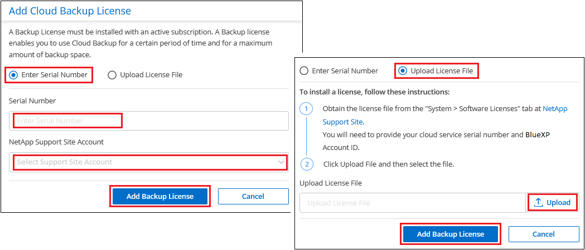
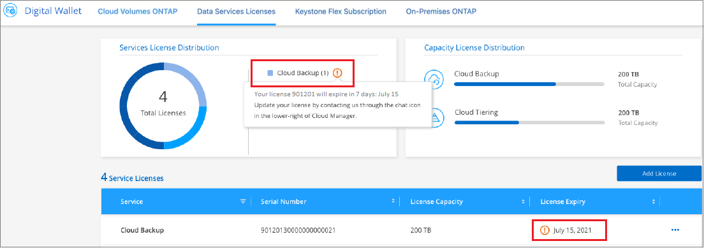

Notes de mise à jour
Notes de mise à jour
Configurez les licences pour la sauvegarde et la restauration BlueXP
 Suggérer des modifications
Suggérer des modifications
Vous pouvez acheter une licence pour la sauvegarde et la restauration BlueXP via un abonnement de paiement à l'utilisation (PAYGO) ou un abonnement annuel à un marché auprès de votre fournisseur cloud, ou en achetant une licence BYOL (Bring Your Own License) de NetApp. Une licence valide est requise pour activer la sauvegarde et la restauration BlueXP dans un environnement de travail, créer des sauvegardes de vos données de production et restaurer les données de sauvegarde sur un système de production.
Quelques remarques avant de lire plus loin :
-
Si vous avez déjà souscrit à l'abonnement PAYGO (paiement basé sur l'utilisation) dans le marché de votre fournisseur de cloud pour un système Cloud Volumes ONTAP, vous êtes également automatiquement abonné à la sauvegarde et à la restauration BlueXP. Vous n'aurez pas besoin de vous abonner à nouveau.
-
BYOL (Bring Your Own License) de sauvegarde et de restauration BlueXP est une licence flottante que vous pouvez utiliser sur tous les systèmes associés à votre compte BlueXP. Par conséquent, si vous disposez de suffisamment de capacité de sauvegarde sur une licence BYOL, vous n'avez pas besoin d'acheter une autre licence BYOL.
-
Si vous utilisez une licence BYOL, il est également recommandé d'souscrire à un abonnement PAYGO. Si vous sauvegardez un nombre de données supérieur à celui autorisé par votre licence BYOL ou si la durée de votre licence expire, la sauvegarde se poursuit avec votre abonnement avec paiement basé sur l'utilisation - aucune interruption de service n'est constatée.
-
La sauvegarde de données ONTAP sur site vers StorageGRID nécessite une licence BYOL, mais les besoins en espace de stockage du fournisseur cloud sont réduits.
essai gratuit de 30 jours
Un essai gratuit de 30 jours de sauvegarde et de restauration BlueXP est disponible si vous vous inscrivez à un abonnement avec paiement à l'utilisation sur le marché de votre fournisseur cloud. L'essai gratuit commence au moment où vous vous abonnez à la liste Marketplace. Notez que si vous payez l'abonnement Marketplace lors du déploiement d'un système Cloud Volumes ONTAP, puis que vous démarrez votre essai gratuit de sauvegarde et de restauration BlueXP 10 jours plus tard, vous disposez de 20 jours pour utiliser l'essai gratuit.
À la fin de l'essai gratuit, vous serez automatiquement basculé vers l'abonnement PAYGO sans interruption. Si vous décidez de ne pas continuer à utiliser la sauvegarde et la restauration BlueXP, juste "Annulez l'enregistrement de la sauvegarde et de la restauration BlueXP depuis l'environnement de travail" avant la fin de l'essai, vous ne serez pas facturé.
Utilisez un abonnement PAYGO pour la sauvegarde et la restauration de BlueXP
Avec le paiement à l'utilisation, vous payez le coût du stockage objet pour votre fournisseur cloud et les coûts des licences de sauvegarde NetApp à l'heure sur un seul abonnement. Vous devez vous abonner même si vous disposez d'une période d'essai gratuite ou si vous apportez votre propre licence (BYOL) :
-
L'abonnement garantit l'absence de perturbation du service après la fin de votre essai gratuit. À la fin de l'essai, vous serez facturé toutes les heures en fonction de la quantité de données que vous sauvegardez.
-
Si vous sauvegardez plus de données que ce que votre licence BYOL ne le permet, les opérations de sauvegarde et de restauration des données se poursuivent sur votre abonnement avec paiement basé sur l'utilisation. Par exemple, si vous disposez d'une licence BYOL 10 Tio, toute la capacité au-delà de l'année 10 Tio est facturée via l'abonnement PAYGO.
Vous ne serez pas facturé à l'utilisation de votre abonnement au cours de l'essai gratuit ou si vous n'avez pas dépassé votre licence BYOL.
PAYGO propose plusieurs plans pour la sauvegarde et la restauration BlueXP :
-
Un pack « Cloud Backup » vous permet de sauvegarder les données Cloud Volumes ONTAP et ONTAP sur site.
-
Pack « CVO Professional » pour regrouper les fonctionnalités de sauvegarde et de restauration Cloud Volumes ONTAP et BlueXP. Cela inclut un nombre illimité de sauvegardes pour le système Cloud Volumes ONTAP utilisant la licence (la capacité de sauvegarde n'est pas comptée par rapport à la capacité sous licence). Cette option ne vous permet pas de sauvegarder les données ONTAP sur site.
Notez que cette option nécessite également un abonnement PAYGO pour la sauvegarde et la restauration, mais aucun frais n'est facturé pour les systèmes Cloud Volumes ONTAP éligibles.
-
Un package « CVO Edge cache » offre les mêmes fonctionnalités que le package « CVO Professional », mais il inclut également la prise en charge du "La mise en cache BlueXP Edge" services. Vous êtes autorisé à déployer un système de mise en cache BlueXP Edge pour chaque 3 To de capacité provisionnée sur le système Cloud Volumes ONTAP. Cette option est disponible via Azure et Google Marketplaces, et ne vous permet pas de sauvegarder les données ONTAP sur site.
Utilisez les liens suivants pour vous abonner à la sauvegarde et à la restauration BlueXP depuis le Marketplace de votre fournisseur cloud :
Utilisez un contrat annuel
Payez chaque année pour la sauvegarde et la restauration BlueXP via un contrat annuel. Ils sont disponibles sur 1, 2 ou 3 ans.
Si vous avez un contrat annuel depuis un marché, toute la consommation de sauvegarde et de restauration BlueXP est facturée sur ce contrat. Vous ne pouvez pas combiner un contrat annuel de vente avec un contrat BYOL.
Lors de l'utilisation d'AWS, deux contrats annuels sont disponibles auprès du "Page AWS Marketplace" Pour les systèmes Cloud Volumes ONTAP et ONTAP sur site :
-
Un plan de « sauvegarde dans le cloud » vous permet de sauvegarder les données Cloud Volumes ONTAP et les données ONTAP sur site.
Si vous souhaitez utiliser cette option, configurez votre abonnement à partir de la page Marketplace, puis "Associez l'abonnement à vos identifiants AWS". Notez que vous devrez également payer pour vos systèmes Cloud Volumes ONTAP via cet abonnement annuel au contrat puisque vous ne pouvez attribuer qu'un seul abonnement actif à vos identifiants AWS dans BlueXP.
-
Un plan « CVO Professional » qui vous permet de regrouper les fonctionnalités de sauvegarde et de restauration Cloud Volumes ONTAP et BlueXP. Cela inclut un nombre illimité de sauvegardes pour le système Cloud Volumes ONTAP utilisant la licence (la capacité de sauvegarde n'est pas comptée par rapport à la capacité sous licence). Cette option ne vous permet pas de sauvegarder les données ONTAP sur site.
Voir la "Rubrique sur les licences Cloud Volumes ONTAP" pour en savoir plus sur cette option de licence.
Si vous souhaitez utiliser cette option, vous pouvez configurer le contrat annuel lorsque vous créez un environnement de travail Cloud Volumes ONTAP et BlueXP vous invite à vous abonner à AWS Marketplace.
Utilisez une licence BYOL pour la sauvegarde et la restauration BlueXP
Modèle BYOL de 1, 2 ou 3 ans avec les licences Bring Your Own. Vous ne payez que les données que vous protégez, calculées par la capacité logique utilisée (avant toutes les efficacités) des volumes ONTAP source qui sont sauvegardés. Cette capacité est également connue sous le nom de téraoctets frontaux (FETB).
La licence de sauvegarde et de restauration BYOL BlueXP est une licence flottante qui permet de partager la capacité totale entre tous les systèmes associés à votre compte BlueXP. Pour les systèmes ONTAP, vous pouvez obtenir une estimation approximative de la capacité dont vous avez besoin en exécutant la commande d'interface de ligne de commande volume show -fields logical-used-by-afs pour les volumes que vous prévoyez de sauvegarder.
Si vous ne disposez pas d'une licence BYOL pour la sauvegarde et la restauration BlueXP, cliquez sur l'icône de chat dans le coin inférieur droit de BlueXP pour en acheter une.
Si vous ne souhaitez pas utiliser de licence basée sur des nœuds non attribuée à Cloud Volumes ONTAP, vous pouvez la convertir en licence de sauvegarde et de restauration BlueXP avec la même équivalence en dollar et la même date d'expiration. "Cliquez ici pour plus d'informations".
Vous utilisez le portefeuille digital BlueXP pour gérer les licences BYOL. Vous pouvez ajouter de nouvelles licences, mettre à jour les licences existantes et afficher l'état des licences depuis le portefeuille digital BlueXP.
Obtenez votre fichier de licence de sauvegarde et de restauration BlueXP
Après avoir acheté votre licence BlueXP Backup and Recovery (Cloud Backup), vous activez la licence dans BlueXP en entrant le numéro de série BlueXP Backup and Recovery et le compte NSS (NetApp support site), ou en téléchargeant le fichier de licence NetApp. Les étapes ci-dessous montrent comment obtenir le fichier de licence NLF si vous prévoyez d'utiliser cette méthode.
Si vous exécutez la sauvegarde et la restauration BlueXP dans un site sur site qui ne dispose pas d'un accès Internet, c'est-à-dire que vous avez déployé le connecteur BlueXP dans "mode privé", vous devez obtenir le fichier de licence à partir d'un système connecté à internet. L'activation de la licence à l'aide du numéro de série et du compte du site de support NetApp n'est pas disponible pour les installations en mode privé.
Vous devez disposer des informations suivantes avant de commencer :
-
Numéro de série de la sauvegarde et de la restauration BlueXP
Recherchez ce numéro dans votre numéro de commande ou contactez l'équipe chargée du compte pour obtenir ces informations.
-
ID de compte BlueXP
Vous pouvez trouver votre identifiant de compte BlueXP en sélectionnant le menu déroulant compte en haut de BlueXP, puis en cliquant sur gérer compte en regard de votre compte. Votre ID de compte se trouve dans l'onglet vue d'ensemble. Pour un site en mode privé sans accès à Internet, utilisez account-DARKSITE1.
-
Connectez-vous au "Site de support NetApp" Et cliquez sur systèmes > licences logicielles.
-
Entrez votre numéro de série de licence de sauvegarde et de restauration BlueXP.

-
Dans la colonne License Key, cliquez sur Get NetApp License File.
-
Saisissez votre identifiant de compte BlueXP (il s'agit d'un identifiant de locataire sur le site d'assistance) et cliquez sur Submit pour télécharger le fichier de licence.

Ajoutez les licences BYOL de sauvegarde et de restauration BlueXP à votre compte
Après avoir acheté une licence de sauvegarde et de restauration BlueXP pour votre compte NetApp, vous devez ajouter la licence à BlueXP.
-
Dans le menu BlueXP, cliquez sur gouvernance > porte-monnaie numérique, puis sélectionnez l'onglet licences de services de données.
-
Cliquez sur Ajouter une licence.
-
Dans la boîte de dialogue Add License, entrez les informations de licence et cliquez sur Add License:
-
Si vous disposez du numéro de série de la licence de sauvegarde et connaissez votre compte NSS, sélectionnez l'option entrer le numéro de série et saisissez ces informations.
Si votre compte sur le site de support NetApp n'est pas disponible dans la liste déroulante, "Ajoutez le compte NSS à BlueXP".
-
Si vous disposez du fichier de licence de sauvegarde (requis lorsqu'il est installé sur un site sombre), sélectionnez l'option Télécharger le fichier de licence et suivez les invites pour joindre le fichier.

-
BlueXP ajoute la licence pour que la sauvegarde et la restauration BlueXP soient actives.
Mettez à jour une licence BYOL de sauvegarde et de restauration BlueXP
Si la durée de votre licence approche de la date d'expiration ou si votre capacité sous licence atteint la limite, vous serez informé dans l'interface utilisateur de la sauvegarde. Cet état apparaît également sur la page du portefeuille digital BlueXP et dans "Notifications".

Vous pouvez mettre à jour votre licence de sauvegarde et de restauration BlueXP avant son expiration afin que votre capacité à sauvegarder et à restaurer vos données ne soit pas interrompue.
-
Cliquez sur l'icône de chat en bas à droite de BlueXP, ou contactez le support pour demander une extension de votre période ou de la capacité supplémentaire de votre licence de sauvegarde et de restauration BlueXP pour le numéro de série spécifique.
Une fois que vous avez payé la licence et qu'elle est enregistrée sur le site de support NetApp, BlueXP met automatiquement à jour la licence dans le portefeuille digital BlueXP. La page des licences des services de données reflète le changement en 5 à 10 minutes.
-
Si BlueXP ne peut pas mettre à jour automatiquement la licence (par exemple, lorsqu'elle est installée sur un site sombre), vous devrez charger manuellement le fichier de licence.
-
C'est possible Procurez-vous le fichier de licence sur le site de support NetApp.
-
Dans l'onglet Data Services Licenses de la page du portefeuille digital BlueXP, cliquez sur
 Pour le numéro de série de service que vous mettez à jour, cliquez sur mettre à jour la licence.
Pour le numéro de série de service que vous mettez à jour, cliquez sur mettre à jour la licence.
-
Dans la page Update License, téléchargez le fichier de licence et cliquez sur Update License.
-
BlueXP met à jour la licence pour que la sauvegarde et la restauration BlueXP restent actives.
Considérations relatives aux licences BYOL
Lorsque vous utilisez une licence BYOL de sauvegarde et de restauration BlueXP, BlueXP affiche un avertissement dans l'interface utilisateur lorsque la taille de toutes les données que vous sauvegardez approche de la limite de capacité ou de la date d'expiration de la licence. Vous recevrez ces avertissements :
-
Lorsque les sauvegardes atteignent 80 % de la capacité sous licence, et lorsque vous en avez atteint la limite
-
30 jours avant l'expiration d'une licence, et encore une fois à l'expiration de celle-ci
Utilisez l'icône de chat en bas à droite de l'interface BlueXP pour renouveler votre licence lorsque vous voyez ces avertissements.
Deux éléments peuvent se produire lorsque la licence BYOL expire :
-
Si le compte que vous utilisez a un compte PAYGO Marketplace, le service de sauvegarde continue à s'exécuter, mais vous êtes passé à un modèle de licence PAYGO. Vous utilisez la capacité de vos sauvegardes.
-
Si le compte que vous utilisez ne dispose pas d'un compte Marketplace, le service de sauvegarde continue à fonctionner, mais vous continuerez à voir les avertissements.
Une fois votre abonnement BYOL renouvelé, BlueXP met automatiquement à jour la licence. Si BlueXP ne parvient pas à accéder au fichier de licence via la connexion Internet sécurisée (par exemple, lorsqu'il est installé sur un site sombre), vous pouvez obtenir le fichier vous-même et le télécharger manuellement vers BlueXP. Pour obtenir des instructions, reportez-vous à la section "Comment mettre à jour une licence de sauvegarde et de restauration BlueXP".
Les systèmes qui ont basculé vers une licence PAYGO sont automatiquement renvoyés vers la licence BYOL. De plus, les systèmes fonctionnant sans licence ne voient plus les avertissements.